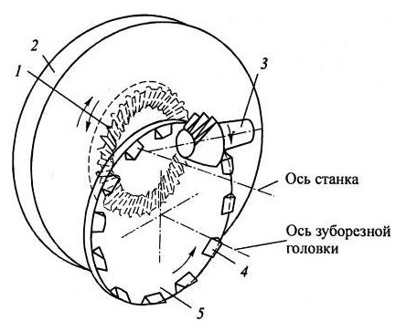
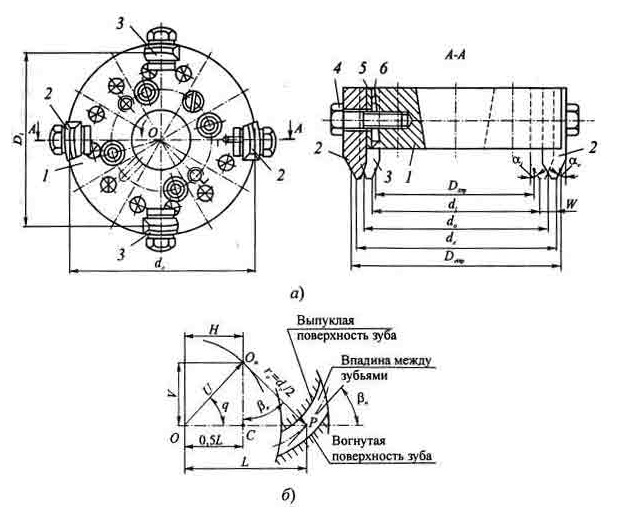
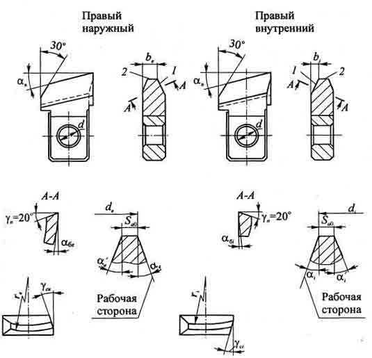
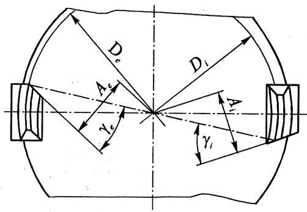
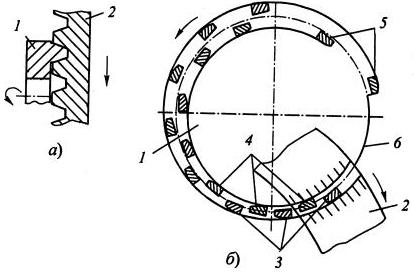
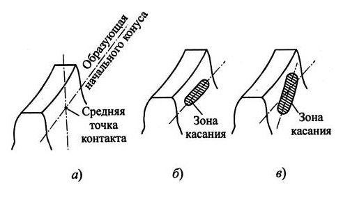
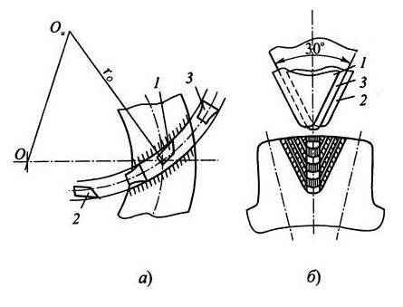

Наибольшее применение для нарезания криволинейных зубьев конических колес получили зуборезные головки. По конструкции они представляют собой насадные торцовые фрезы, осуществляющие помимо вращения движение подачи вдоль своей оси.
В зависимости от размеров, направления вращения и характера операции зуборезные головки изготавливают цельными ( d 0 = 20...80 мм ) и сборными ( d 0 = 100... 1000 мм ). Такими головками нарезают колеса модулем mn = 0,8...25 мм и наибольшей высотой зуба h = 70 мм. Кроме того, в отечественной промышленности большое распространение получили резцовые головки фирмы "Глисон" (США), изготавливаемые в дюймовой системе [d o = 0,5"( 12,7 мм )...21"( 533,4 мм ) ]. В зависимости от вида обработки зуборезные головки могут быть: право- и леворежущими, одно-, двух- и трехстороннего резания, черновыми и чистовыми.
Обкатные передачи с криволинейными зубьями нарезают путем воспроизведения станочного зацепления плосковершинного производящего колеса с зубьями нарезаемого колеса при их взаимной обкатке по схеме, показанной на рисунке.
Здесь роль воображаемого производящего колеса 1 выполняет люлька 2, ось вращения которой совпадает с осью шпинделя станка. Режущиерезцы 4 зуборезной головки 5, установленной на люльке, при вращении от отдельного привода, воспроизводят зубья производящего колеса. Вращение заготовки 3 кинематически связано с вращением люльки. В результате профиль зубьев нарезаемых колес получается как огибающая ряда последовательных положений режущих кромок резцов головки. Кривизна зубьев определяется радиусом головки и положением ее центра на люльке станка. После нарезания одной впадины в обкаточном движении люлька отходит от заготовки и возвращается в исходное положение, а заготовка с помощью механизма деления поворачивается на один шаг. Далее цикл обработки повторяется. Таким образом, обработка зубьев колеса производится путем прерывистого обката.
Для нарезания шестерен z1 с большой кривизной зубьев применяют станки с изменяемым углом наклона оси головки к оси шпинделя и станки фирмы "Эрликон" (Швейцария). Последние, при нарезании колес с равновысокими зубьями формы III, работают путем непрерывного деления.
Для нарезания зубьев колес z2 полуобкатных передач по методу копирования применяют высокопроизводительные станки, работающие зуборезными головками по способу врезания при отсутствии механизма обката, а для чистовой обработки этих колес применяют также зубопротяжные станки, оснащенные головками-протяжками.
Устройство и основные параметры зуборезной головки рассмотрим на примере наиболее часто применяемой головки двухстороннего резания (а). В корпусе головки 1 установлены попеременно резцы двух типов: наружные 2 (для обработки вогнутой поверхности зуба) и внутренние 3 (для обработки выпуклой поверхности зуба). Гнезда под эти резцы прямоугольные, изготовленные с высокой точностью. Резцы, установленные в гнезда, опираются своим выступом, расположенным над хвостовиком, на торец корпуса головки и крепятся винтами 4. Для грубой регулировки резцов по диаметру применяют подкладки 5, а для тонкой - клинья 6, передвигаемые вдоль оси головки винтами. За базу при регулировке по диаметру принимают по одному резцу каждого типа, клинья которых закреплены штифтами. Корпус зуборезной головки изготавливают из конструкционной стали, а затем подвергают закалке и шлифовке. Резцы изготавливают из быстрорежущей стали.
Указанные параметры обеспечиваются регулировкой подкладками и клиньями.
Наружные и внутренние резцы праворежущей головки представляют собой призматические фасонные резцы с прямолинейными боковой l и вершинной 2 режущими кромками. Хвостовики резцов имеют прямоугольное сечение и обеспечивают надежное базирование в корпусе головки. У резцов крупных размеров хвостовики изготавливают из конструкционной стали и соединяют сваркой с рабочей частью, изготовленной из инструментальной стали. Длина рабочей части резца берется несколько больше продольного размера хвостовика, в результате чего образуется выступ, которым резец опирается на торец корпуса резцовой головки, обеспечивая тем самым базирование в осевом направлении.
Плоскость хвостовика, обращенная к оси головки, называется базовой. Расстояние от базовой плоскости до вершины резца называется базовым расстоянием и обозначается b е - у наружных резцов и b i, - у внутренних резцов. Толщина резца по вершине S a0 выбирается такой, чтобы она была несколько меньше ширины впадины зуба колеса в узкой части (у внутреннего торца) и не менее половины ширины впадин в широкой части (у внешнего торца колеса). Высота режущей части резца h 0 = (2,5..3,0)mn выбирается по наибольшему размеру нарезаемых колес данного диапазона при заданном номинальном диаметре головки d 0.
Для создания задних углов на боковой и вершинной режущих кромках резцы затылуют по архимедовой винтовой поверхности в специальных приспособлениях. При этом на вершине зуба задняя поверхность принимает круговую форму, а задний угол при вершине α В = 11...13°. На боковой кромке задний угол меньше ( α В = 2...5°), так как
Переточка резцов производится по передней поверхности. При этом сохраняется профиль боковых режущих кромок и постоянство углов профиля α e и α i.
Нерабочая сторона резца выполняется с углом профиля, меньшим на 1° угла профиля резца другой формы, т.е. для наружного резца α ' e = α i - 1°, а для внутреннего α ' i = α e - 1°.
Достоинствами этих головок являются высокая производительность и универсальность, а недостатком - постоянство ширины впадины между зубьями и, соответственно, переменность толщины нарезаемых зубьев по их длине. Это приводит к снижению прочности колес и точности зубчатых передач. Исправить указанные недостатки при чистовой обработке зубьев колес модулем mn > 2,5 мм можно путем изменения наладок операций.
Бoльшую точность при чистовой обработке обеспечивают зуборезные головки одностороннего резания, у которых имеются только внутренние или только наружные зубья, обрабатывающие одну сторону зубьев. За счет изменения параметров установки на люльке станка и диаметральных размеров головки можно регулировать ширину впадины и, соответственно, толщину нарезаемых зубьев. Последняя влияет на их прочность и обеспечивает необходимое пятно контакта передачи. Такими головками, как правило, обрабатывают только зубья шестерен z1.
Для чистовой обработки зубьев колес z2 полуобкатных передач в условиях крупносерийного и массового производств применяют головки-протяжки, которые работают по методу копирования. При этом заготовка колеса 2 во время нарезания одной впадины неподвижна, а головка-протяжка 1, вращаясь вокруг своей оси, благодаря последовательному изменению радиального положения резцов, за один оборот одновременно обрабатывает обе стороны зуба колеса. Радиус положения наружных резцов 3 при этом равномерно возрастает, а внутренних резцов 4 - уменьшается. Первые режущие зубья устанавливают с небольшим угловым шагом, а последние калибрующие зубья 5 - с увеличенным шагом. Это делается с целью повышения точности обработки при меньшем количестве резцов, одновременно снимающих припуск. Когда протяжка подходит к заготовке своим безрезцовым участком б происходит деление колеса на один зуб. Профиль нарезанных зубьев прямолинейный, поэтому такой способ обработки применим только для передач с передаточным отношением u = 2,5...10. Обработка производится на специальных зубопротяжных станках мод. 5С272Е, 5281Б и других и фирмы "Глисон" (США). Головки-протяжки обеспечивают повышение производительности (в 3-5 раз) по сравнению с обработкой на станках, работающих методом обката, а также повышение точности (на 10...20%) за счет жесткого крепления резцов (без подкладок) и малого припуска на обработку, равного 0,02...0,04 мм.
После чистовой обработки зубьев колес производится их контроль по пятну контакта, которое является основным критерием качества и работоспособности передачи. Теоретически контакт сопряженных колес должен быть точечным, перемещающимся по образующей начального конуса. Однако на практике из-за упругих свойств материала колес контакт имеет вид пятна. Его определяют по краске при обкатке на контрольно-обкаточных станках с применением относительно небольшой нагрузки. Пятно контакта должно быть сплошным, овальным или прямоугольным. Его длина должна составлять не более 50...70 % длины зуба, а ширина - 0,6...1,0 рабочей высоты зуба. Большая ось пятна контакта должна совпадать с образующей начального конуса (а, б). Не допускается выход пятна на кромки зуба и его диагональное расположение по длине зуба (в). Подгонку пятна контакта обычно выполняют после проведения расчетов и регулировки наладки чистовой операции обработки шестерни z1, так как она имеет меньшее число зубьев и нужные результаты достигаются быстрее.
Другим критерием оценки качества передачи является шум при высоких окружных скоростях. Уровень шума зависит от качества обработки поверхностей зубьев, погрешностей изготовления колес и сборки передачи, а также конструкции колес.
Для чернового нарезания зубьев применяют зуборезные головки двух- и трехстороннего резания. Это наиболее трудоемкая операция, так как она протекает в условиях работы с ударами, при снятии больших припусков (до 80 % удаляемого материала) и, соответственно, с большими нагрузками. Из-за низкой стойкости резцов увеличиваются затраты на смену, заточку инструмента и наладку станков. Поэтому на черновых операциях обычно занято в 2-3 раза больше станков, чем на чистовых операциях.
Головки двухстороннего резания, применяемые для чернового зубонарезания, отличаются от рассмотренных выше тем, что они регулируются по диаметральным размерам только подкладками, так как клинья у них, как правило, отсутствуют. Кроме того, для восприятия возросших осевых нагрузок на резцы с целью предотвращения их сдвига на заднем торце головки устанавливают опорное кольцо. Такие головки применяют в массовом и крупносерийном производствах для нарезания зубьев по методу обката.
Головки трехстороннего резания применяют для повышения производительности процесса зубонарезания (а). В отличие от головок двухстороннего резания, у них к внутренним 1 и наружным 2 резцам добавлены средние резцы 3, которые установлены поочередно. При этом средние резцы обрабатывают только дно впадины и их количество равно половине общего числа резцов в головке. По высоте они имеют превышение вершинных режущих кромок на 0,2...0,25 мм, благодаря которому облегчается работа внутренних и наружных резцов (б). Такие головки работают только по методу копирования, т.е. при выключенном движении обката, в условиях массового и крупносерийного производств, при разводе резцов W > 1,8 мм. Они применяются, главным образом, при нарезании зубьев колес z2 полуобкатных передач. Головка при этом работает только по способу врезания, т.е. с подачей вдоль оси.
Для нарезания зубьев шестерен z 1 и колес z 2 обкатных передач и шестерен полуобкатных передач модулем m n > 2,5 мм из целой заготовки за один установ применяют также комбинированный метод. В этом случае предварительно осуществляется нарезание впадины почти на полную глубину врезанием без обката, а в конце обработки включают механизм обката и производят чистовую обработку зубьев. Благодаря этому методу повышается производительность процесса зубонарезания.
Следует отметить, что повышение качества обработки зубьев термически обработанных колес достигается последующим зубошлифованием, а также притиркой с вводом абразивной жидкости в зону контакта и другими способами.